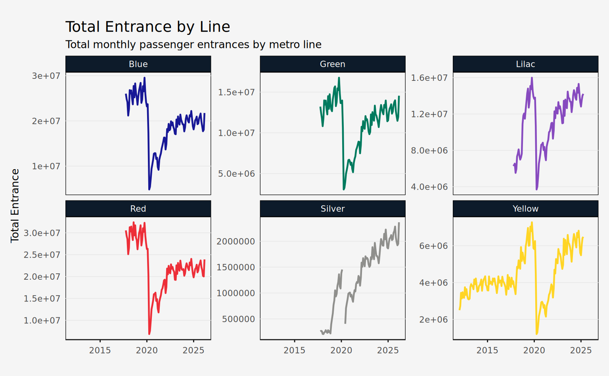
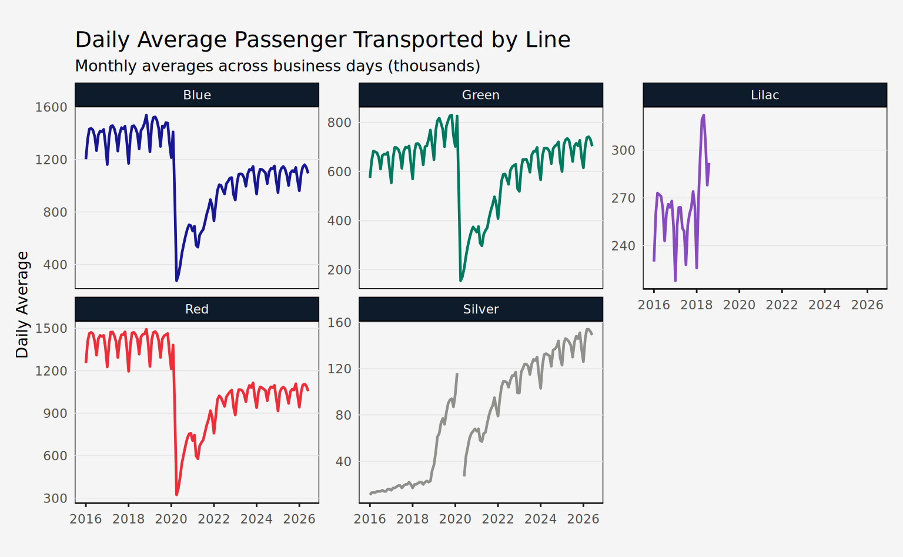
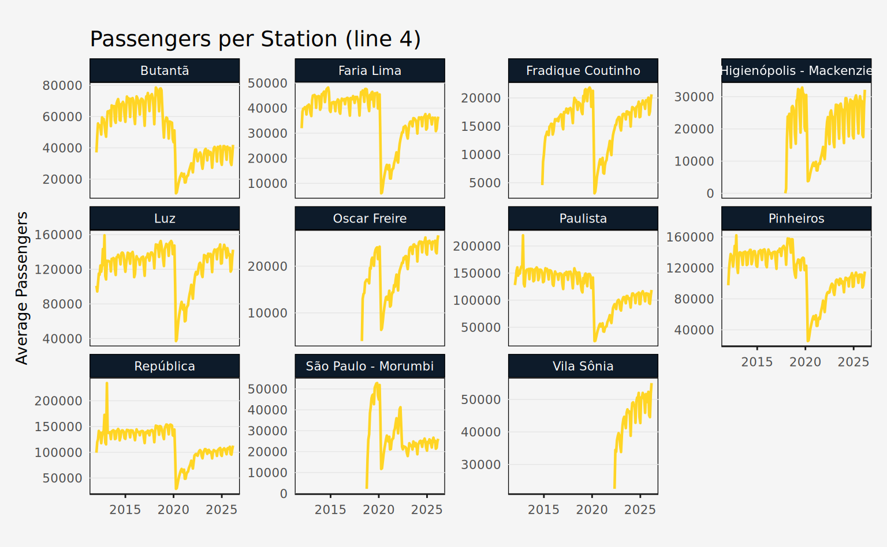
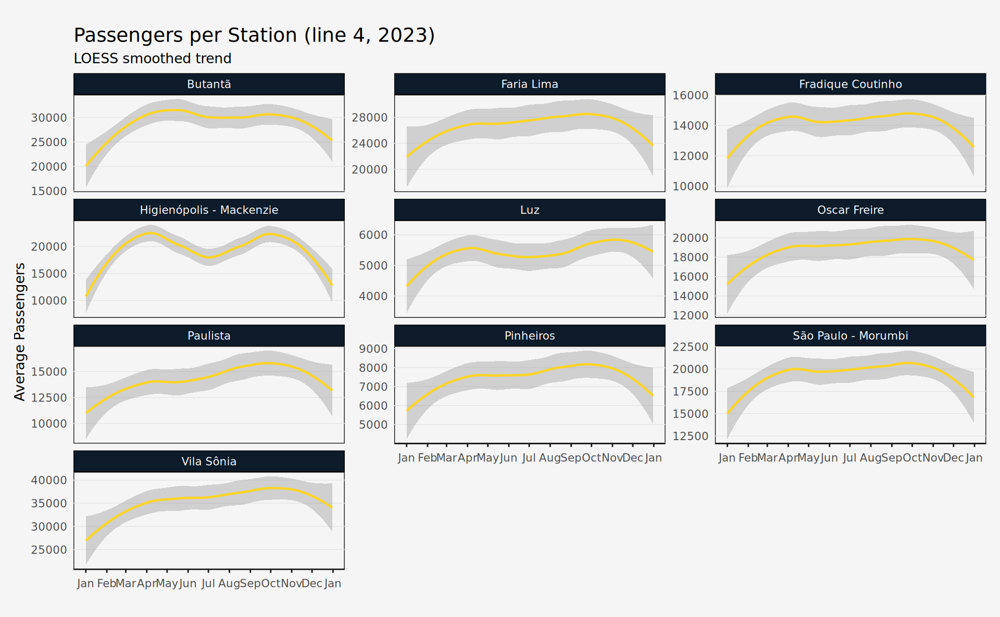

metrosp
The metrosp package provides access to the Metro de São Paulo public transportation data. Since the data is not updated regularly and the datasets are rather compact, this package distributes the data in a “lazy” format. This means that all data comes prepackaged and is called directly, without needing to download or import the raw data.
There are four main datasets:
-
passengers_entrance: daily passengers entering the metro system -
passengers_transported: daily passengers transported by the metro system -
station_averages: daily average passengers per station -
station_daily: daily passengers per station
For convenience, metrosp also provides information on stations and lines of the metro system (lines, stations, and metro_lines). The lines dataset is a spatial dataset and requires the sf package to work properly.
library(sf)
lines
#> Simple feature collection with 55 features and 6 fields
#> Geometry type: GEOMETRY
#> Dimension: XY
#> Bounding box: xmin: -46.98358 ymin: -23.77875 xmax: -46.18294 ymax: -23.19513
#> Geodetic CRS: WGS 84
#> First 10 features:
#> status company_name line_number type line_name_pt line_name
#> 1 current Metrô 1 metro Azul Blue
#> 2 current Metrô 2 metro Verde Green
#> 3 current Metrô 3 metro Vermelha Red
#> 4 current Metrô 5 metro Lilás Lilac
#> 5 current Metrô 15 metro Prata Silver
#> 6 current ViaQuatro 4 metro Amarela Yellow
#> 7 future Metrô 2 metro Verde Green
#> 8 future Metrô 2 metro Verde Green
#> 9 future Metrô 2 metro Verde Green
#> 10 future Metrô 15 metro Prata Silver
#> geom
#> 1 LINESTRING (-46.60291 -23.4...
#> 2 LINESTRING (-46.69089 -23.5...
#> 3 LINESTRING (-46.66754 -23.5...
#> 4 LINESTRING (-46.63049 -23.5...
#> 5 LINESTRING (-46.5838 -23.58...
#> 6 LINESTRING (-46.63449 -23.5...
#> 7 LINESTRING (-46.54846 -23.4...
#> 8 LINESTRING (-46.54283 -23.5...
#> 9 LINESTRING (-46.7015 -23.54...
#> 10 LINESTRING (-46.46899 -23.5...Finally, the package also provides a named vector of colors for each line of the metro system (metro_colors).
metro_colors
#> Blue Green Red Yellow Lilac Silver
#> "#171796" "#007A5E" "#ED2E38" "#FFD525" "#874ABF" "#8F8F8C"Using the datasets is straightforward, just call the dataset name.
glimpse(passengers_entrance)
#> Rows: 4,030
#> Columns: 9
#> $ date <date> 2012-01-01, 2012-01-01, 2012-01-01, 2012-01-01, 2012-01-…
#> $ line_number <dbl> 4, 4, 4, 4, 4, 4, 4, 4, 4, 4, 4, 4, 4, 4, 4, 4, 4, 4, 4, …
#> $ metric_abb <chr> "max", "mdo", "mdu", "msa", "total", "max", "mdo", "mdu",…
#> $ value <dbl> 48112.00, 4932.68, 19867.93, 9775.25, 2504294.00, 53328.0…
#> $ metric <chr> "Daily Peak", "Average on Sundays", "Average on Business …
#> $ metric_pt <chr> "Máxima Diária", "Média dos Domingos", "Média dos Dias Út…
#> $ line_name <chr> "Yellow", "Yellow", "Yellow", "Yellow", "Yellow", "Yellow…
#> $ line_name_pt <chr> "Amarela", "Amarela", "Amarela", "Amarela", "Amarela", "A…
#> $ year <dbl> 2012, 2012, 2012, 2012, 2012, 2012, 2012, 2012, 2012, 201…All datasets are returned as tibble so using the dplyr package is recommended.
The datasets
This tutorial will briefly introduce the main datasets and how to use them by making simple visualizations with the data. To better replicate the visualization, use the ggplot2 package and the custom theme below.
Code
library(ggplot2)
theme_series <- theme_minimal(base_family = "Avenir", base_size = 10) +
theme(
panel.background = element_rect(fill = "#f5f5f5"),
plot.background = element_rect(fill = "#f5f5f5"),
plot.margin = margin(20, 10, 20, 10),
plot.title = element_text(family = "Lora", size = 14),
panel.grid.minor = element_blank(),
panel.grid.major.x = element_blank(),
panel.grid.major.y = element_line(color = "gray90", linewidth = 0.25),
axis.title.x = element_blank(),
axis.line.x = element_line(color = "gray10", linewidth = 0.5),
axis.ticks.x = element_line(color = "gray10", linewidth = 0.5),
strip.background = element_rect(fill = "#0D1B2A"),
strip.text = element_text(color = "#ffffff"),
legend.position = "bottom"
)Entrance and Transported
The passengers_entrance and passengers_transported datasets are both monthly passengers entering and transported by the metro system. The former is a daily count of passengers entering the metro system, while the latter is a daily count of passengers transported by the metro system.
The data is aggregated into metrics:
-
max: maximum number of passengers (daily peak) -
mdu: average number of passengers on business days -
mdo: average number of passengers on Sundays -
msa: average number of passengers on Saturdays -
total: total number of passengers
Entrance
This dataset is identified by month (date), line (line_number, line_name), and metric (metric_abb, metric). The data is in tidy format.
glimpse(passengers_entrance)
#> Rows: 4,030
#> Columns: 9
#> $ date <date> 2012-01-01, 2012-01-01, 2012-01-01, 2012-01-01, 2012-01-…
#> $ line_number <dbl> 4, 4, 4, 4, 4, 4, 4, 4, 4, 4, 4, 4, 4, 4, 4, 4, 4, 4, 4, …
#> $ metric_abb <chr> "max", "mdo", "mdu", "msa", "total", "max", "mdo", "mdu",…
#> $ value <dbl> 48112.00, 4932.68, 19867.93, 9775.25, 2504294.00, 53328.0…
#> $ metric <chr> "Daily Peak", "Average on Sundays", "Average on Business …
#> $ metric_pt <chr> "Máxima Diária", "Média dos Domingos", "Média dos Dias Út…
#> $ line_name <chr> "Yellow", "Yellow", "Yellow", "Yellow", "Yellow", "Yellow…
#> $ line_name_pt <chr> "Amarela", "Amarela", "Amarela", "Amarela", "Amarela", "A…
#> $ year <dbl> 2012, 2012, 2012, 2012, 2012, 2012, 2012, 2012, 2012, 201…Note that a special line was defined to aggregate the total of the METRÔ system (line_name = "METRO System" or line_num = 99). For most uses, it’s best to filter out this line.
total_entrance <- passengers_entrance |>
filter(metric_abb == "total", line_name != "METRO System")The plot shows the total monthly passenger entrances by metro line. Note that the line-5 series is interrupted since the ownership of the line was transferred to ViaMobilidade in 2018.
Code
ggplot(total_entrance, aes(x = date, y = value, color = line_name)) +
geom_line(lwd = 0.8) +
facet_wrap(vars(line_name), scales = "free_y") +
scale_color_manual(values = metro_colors) +
guides(color = "none") +
labs(
title = "Total Entrance by Line",
subtitle = "Total monthly passenger entrances by metro line",
x = NULL,
y = "Total Entrance"
) +
theme_series
Transported
This dataset is identified by month (date), line (line_number, line_name), and metric (metric_abb, metric). The data is in tidy format. It has the same columns as passengers_entrance and values are in individual passengers. Also, this dataset currently only includes data on the METRÔ operated system. In the future, this dataset may be expanded to include lines 4 and 5.
glimpse(passengers_transported)
#> Rows: 2,850
#> Columns: 9
#> $ date <date> 2017-10-01, 2017-10-01, 2017-10-01, 2017-10-01, 2017-10-…
#> $ line_number <dbl> 1, 1, 1, 1, 1, 2, 2, 2, 2, 2, 3, 3, 3, 3, 3, 5, 5, 5, 5, …
#> $ metric_abb <chr> "max", "mdo", "mdu", "msa", "total", "max", "mdo", "mdu",…
#> $ value <dbl> 1506, 422, 1432, 788, 35446, 718, 179, 696, 301, 16637, 1…
#> $ metric <chr> "Daily Peak", "Average on Sundays", "Average on Business …
#> $ metric_pt <chr> "Máxima Diária", "Média dos Domingos", "Média dos Dias Út…
#> $ line_name <chr> "Blue", "Blue", "Blue", "Blue", "Blue", "Green", "Green",…
#> $ line_name_pt <chr> "Azul", "Azul", "Azul", "Azul", "Azul", "Verde", "Verde",…
#> $ year <dbl> 2017, 2017, 2017, 2017, 2017, 2017, 2017, 2017, 2017, 201…Note that a special line was defined to aggregate the total of the METRÔ system (line_name = "METRO System" or line_num = 99). For most uses, it’s best to filter out this line.
daily_avg <- passengers_transported |>
filter(metric_abb == "mdu", line_number != 99)The plot below shows the daily average (business days) passenger transported by metro line.
Code
ggplot(daily_avg, aes(x = date, y = value, color = line_name)) +
geom_line(lwd = 0.8) +
facet_wrap(vars(line_name), scales = "free_y") +
scale_color_manual(values = metro_colors) +
labs(
title = "Daily Average Passenger Transported by Line",
subtitle = "Monthly averages across business days (thousands)",
x = NULL,
y = "Daily Average"
) +
guides(color = "none") +
theme_series
Station Averages
This dataset is identified by month (date), line (line_number, line_name), and station (station_name). The only value column available is avg_passenger, which is the daily average (business days) of passengers entering the station.
glimpse(station_averages)
#> Rows: 9,360
#> Columns: 7
#> $ date <date> 2012-01-01, 2012-01-01, 2012-01-01, 2012-01-01, 2012-01…
#> $ line_number <dbl> 4, 4, 4, 4, 4, 4, 4, 4, 4, 4, 4, 4, 4, 4, 4, 4, 4, 4, 4,…
#> $ station_name <chr> "Butantã", "Faria Lima", "Luz", "Paulista", "Pinheiros",…
#> $ avg_passenger <dbl> 37066.82, 31989.09, 100889.32, 127844.59, 97537.45, 9919…
#> $ line_name <chr> "Yellow", "Yellow", "Yellow", "Yellow", "Yellow", "Yello…
#> $ line_name_pt <chr> "Amarela", "Amarela", "Amarela", "Amarela", "Amarela", "…
#> $ year <dbl> 2012, 2012, 2012, 2012, 2012, 2012, 2012, 2012, 2012, 20…The plot below shows the daily average (business days) passengers entering each station of line 4. Note that the temporal range of the data is unequal across stations, since not all of them were inaugurated at the same time.
Code
line4st <- station_averages |>
filter(line_number == 4)
ggplot(line4st, aes(x = date, y = avg_passenger)) +
geom_line(lwd = 0.8, color = metro_colors["Yellow"]) +
facet_wrap(vars(station_name), scales = "free_y") +
labs(
x = NULL,
y = "Average Passengers",
title = "Passengers per Station (line 4)"
) +
theme_series
Station Daily
This dataset is identified by day (date), line (line_number, line_name), and station (station_name). The only value column available is passengers, which is the daily number of passengers entering the station. Additionally, the column station_code contains three letter abbreviations for stations, but only for METRÔ operated lines.
glimpse(station_daily)
#> Rows: 226,822
#> Columns: 8
#> $ date <date> 2012-01-01, 2012-01-01, 2012-01-01, 2012-01-01, 2012-01-…
#> $ line_number <dbl> 4, 4, 4, 4, 4, 4, 4, 4, 4, 4, 4, 4, 4, 4, 4, 4, 4, 4, 4, …
#> $ station_name <chr> "Butantã", "Faria Lima", "Luz", "Paulista", "Pinheiros", …
#> $ passengers <dbl> 7742, 4737, 695, 2277, 332, 25317, 21930, 3923, 14356, 39…
#> $ line_name <chr> "Yellow", "Yellow", "Yellow", "Yellow", "Yellow", "Yellow…
#> $ line_name_pt <chr> "Amarela", "Amarela", "Amarela", "Amarela", "Amarela", "A…
#> $ station_code <chr> NA, NA, NA, NA, NA, NA, NA, NA, NA, NA, NA, NA, NA, NA, N…
#> $ year <dbl> 2012, 2012, 2012, 2012, 2012, 2012, 2012, 2012, 2012, 201…The plot below shows the trend of daily passengers entering each station of line 4 in 2023.
Code
line4st_daily <- station_daily |>
filter(line_number == 4, year == 2023)
ggplot(line4st_daily, aes(x = date, y = passengers)) +
geom_smooth(
lwd = 0.8,
color = metro_colors["Yellow"],
method = "loess",
span = 0.65
) +
facet_wrap(vars(station_name), scales = "free_y", ncol = 3) +
scale_x_date(date_breaks = "1 month", date_labels = "%b") +
labs(
title = "Passengers per Station (line 4, 2023)",
subtitle = "LOESS smoothed trend",
x = NULL,
y = "Average Passengers"
) +
theme_series